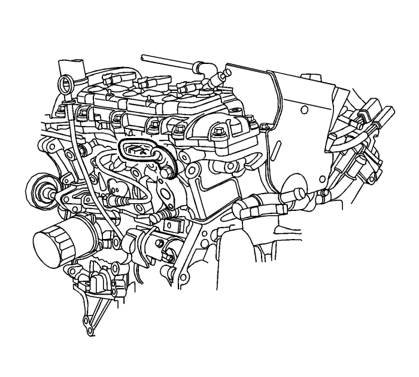
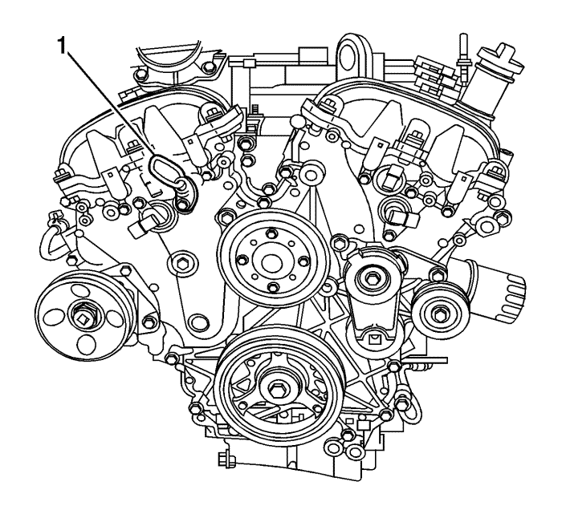
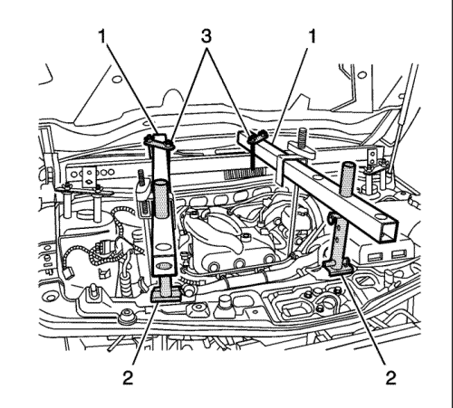
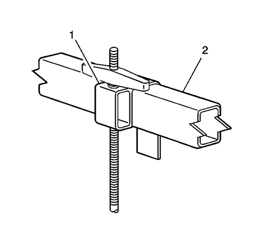
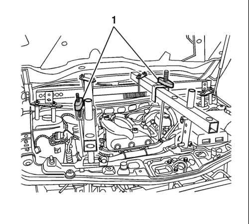

Dispositivo de soporte del motor
Herramientas especiales
| • | EN-28467-B Dispositivo de soporte del motor universal |
| • | Gancho de retención EN-28467-7A |
| • | EN-28467-13 Adaptadores de dispositivo de soporte del motor |
| • | Arandela y tueca con orejas del gancho elevador EN-28467-34 |
| • | EN-36462-A Conjunto de la pata adaptadora del soporte del motor |
| • | EN-42451-1 Adaptador del soporte del motor |
| • | 4 pasadores GM P/N 11519137 o equivalente |
Si desea informarse sobre herramientas regionales equivalentes, consultar Herramientas especiales .
Procedimiento de montaje

- Desmonte la cubierta del colector de admisión. Consultar Sustitución de la cubierta del colector de admisión .
- Desmonte la pantalla de entrada de aire. Consultar Sustitución del panel de la rejilla de entrada de aire : Carrocería corta .
- Monte dos pasadores con doble extremo de M8 x 1,25 en cada barra de suspensión con un engranaje de 30 mm a la barra de suspensión y un engranaje de 16 mm a los adaptadores EN-28467-13.
- Instale tres adaptadores EN-28467-13 (1) y dos pasadores de barra de suspensión J 28467-5 (2) en la parte superior izquierda y derecha de la barra de suspensión.
- Instale un accesorio de soporte de la barra transversal del accesorio de soporte del motor EN-28467-B (3) de 127 cm (50 pulg.) de modo transversal a través del vehículo entre ambos adaptadores de la barra de transmisión J 28467-5 (2).
- Instale los pernos de seguridad J-28467-10 (4) en los adaptadores de la barra de transmisión J 28467-5 (2) y la barra de transmisión (3) para evitar movimientos.

- Monte el soporte de apoyo del motor EN-42451-1 al motor.

- Monte el soporte de apoyo del motor EN-42451-1 al motor.

- Coloque longitudinalmente dos barras transversales del accesorio de soporte del motor (1) de 58 cm (23 pulg.) con el conjunto de dos patas EN-36462-A (2).
- Instale dos abrazaderas de fijación (3) J 28467-1A para asegurar la barra transversal montada longitudinalmente a la barra transversal montada transversalmente.

- Monte la tuerca con orejas EN-28467-34 y el soporte del gancho de elevación J-28467-6A en el gancho de elevación EN-28467-7A.

- Monte el conjunto del soporte y el gancho de elevación (1) en la barra transversal montada longitudinalmente (2).
- Coloque el gancho elevación EN-28467-7A en el soporte de apoyo del motor EN-42451-1 (2) del soporte de elevación del motor trasero.
- Monte la tuerca con orejas EN-28467-34 y el soporte del gancho de elevación J-28467-6A en el gancho de elevación EN-28467-7A.
- Monte el conjunto del soporte y el gancho de elevación (1) en la barra transversal montada longitudinalmente (2).
- Coloque el gancho de retención EN-28467-7A (1) en el soporte de apoyo del motor EN-42451-1 (2) del soporte de elevación del motor delantero.

- Apriete uniformemente ambas tuercas con orejas EN-28467-34 (1) hasta que el peso del motor se apoye en el accesorio de apoyo del motor y no en los soportes del motor.
| © Copyright Chevrolet Europe. All rights reserved |